LOADING
BẮT ĐẦU
Âm thanh được ghi lại từ một vụ việc có thật xảy ra vào ngày 9/2/2023 tại tỉnh
Nghệ An
Chiều 9/2/2023, trên mạng xã hội xuất hiện clip dài hơn 1 phút quay cảnh một nữ sinh bị lột hết
áo, ngồi co ro dùng hai cánh tay che ngực.
A và N là 2 trong 3 nữ sinh tham gia đánh bạn. Sự việc làm rúng động dư luận cả nước về tính chất
hung bạo của những nữ sinh chỉ mới 12-13 tuổi.
Cơ quan công an đã phải vào cuộc làm rõ vụ việc.
Đây là câu chuyện được kể bằng góc nhìn của hai kẻ bắt nạt: A và N.


BẮT NẠT

GỤC NGÃ
PHẦN I: “EM TỪNG BỊ ‘ĐẬP’”

Bạn đó nói xấu em và các bạn cùng lớp của bạn có kể lại cho em.
Sau đó, em đã xuống trường bạn đó để “đập”
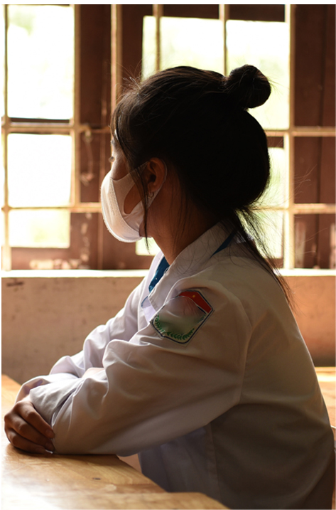
Nếu không gặp mặt, khó có thể tin rằng nữ sinh lớp 7 này đã từng tham gia đánh bạn.
A có vẻ bề ngoài xinh xắn, hiền dịu, ánh mắt trong veo…
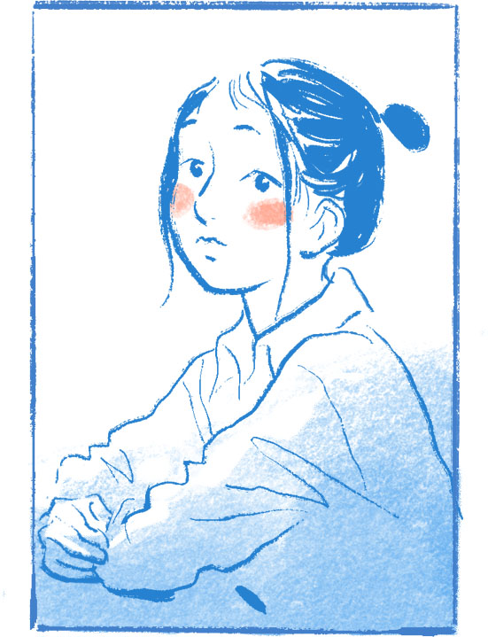
“Em từng đánh một bạn nữ học trường khác. Khi bạn bị đánh, lột áo, em đã quay lại và đăng lên mạng xã hội”, A nói.
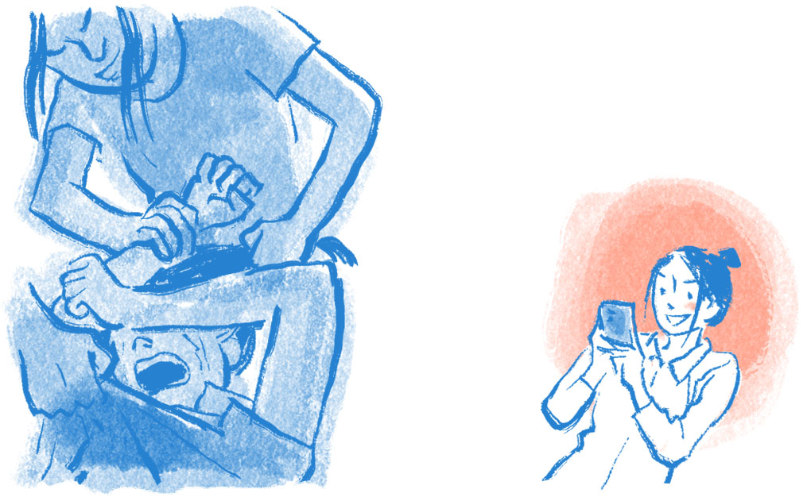
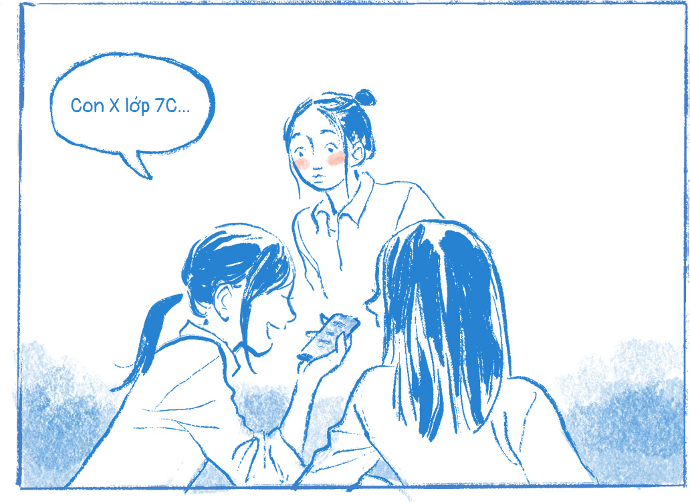
Tất cả những gì A biết chỉ là những lời đồn thổi và kích bác về một nữ sinh đang nói xấu mình.
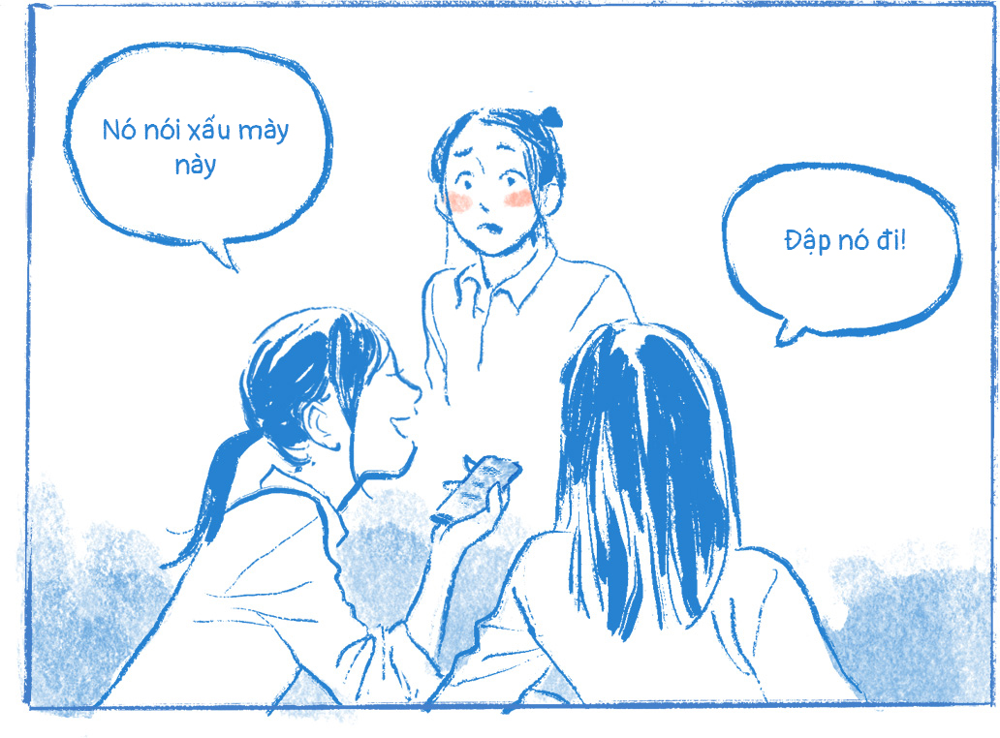
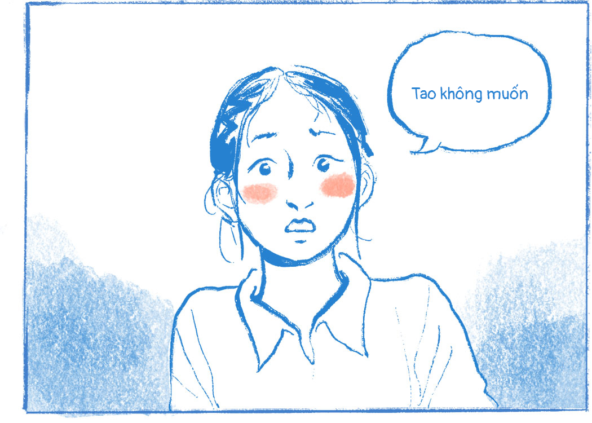
Ban đầu, A không rõ thực hư và cũng không hề có ý định đánh bạn.
“Lúc đó em không có cảm giác gì hết. Nhưng sau đó, chị N rủ em xuống đó chơi và gặp bạn đó thì chị N nhảy vô đập và em đập theo”
Thầy Hồ Tuấn Anh, Hiệu trưởng trường THCS Quỳnh Phương (Quỳnh Mai, Nghệ An), nơi A và N theo học cho biết, đây là “vụ việc động trời” của nhà trường và của cả địa phương.
TVụ việc bất ngờ xảy ra vào ngày Chủ nhật sau kỳ nghỉ Tết nguyên đán, nhưng ngay lập tức nhà trường đã nắm bắt thông tin và làm rõ sự việc với A, N cùng gia đình các em.
Bạn đó nói xấu em và các bạn cùng lớp của bạn có kể lại cho em.
Sau đó, em đã xuống trường bạn đó để “đập”
Nhưng ít người biết rằng, kẻ đi bắt nạt cũng từng bị bắt nạt.
Những giây phút hả hê nhanh chóng qua đi. Xem lại đoạn video do chính mình quay lại, A cảm thấy hối hận và thấy lại hình ảnh của chính mình bị bắt nạt trước đây.
A cũng đã từng bị các bạn cùng llớp đánh, quay video và up lên mạng xã hội. Đoạn video đã khơi dậy “ký ức đen”, những tổn thương A từng hứng chịu.
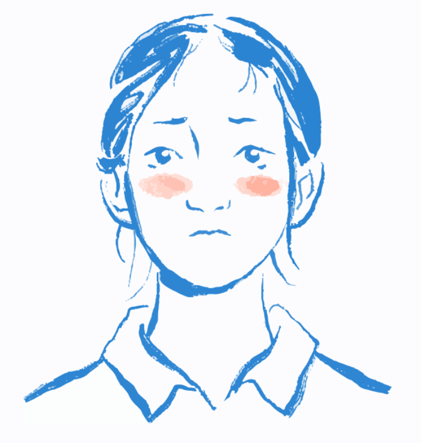
Năm học lớp 6, các bạn có xúm vào trêu em và đã “đập” em một lần. Sau đó, các bạn vẫn tiếp tục xúm vào trêu, bắt nạt em khiến em không thể học”
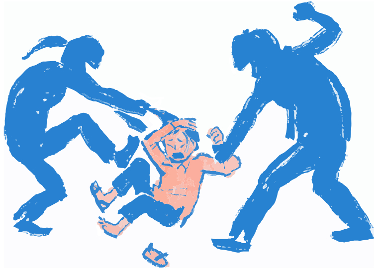
Khi biết việc con bị bắt nạt, bố mẹ A đã lên làm việc với nhà trường, thậm chí xin chuyển trường cho con.
Nhưng thầy Tuấn Anh chính là người thuyết phục bố mẹ A cho em được ở lại. (Thầy nói gì, thuyết phục như thế nào, tại sao không nên chuyển trường)
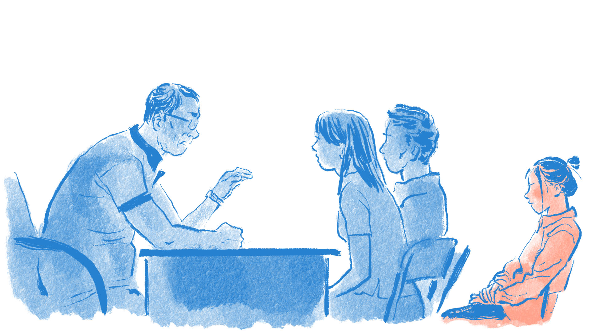
Em bị nắm tóc đánh, đá rồi ngồi lên đầu. Các bạn cũng đe dọa nếu em nói ra sẽ “đập” em tiếp
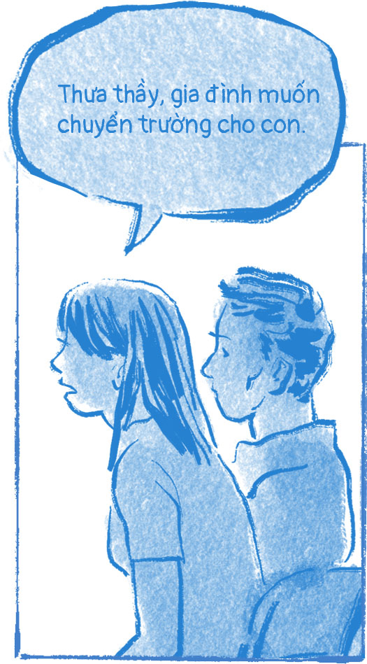

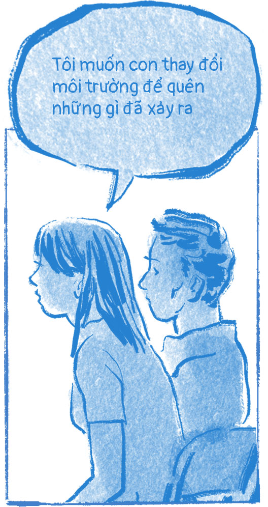
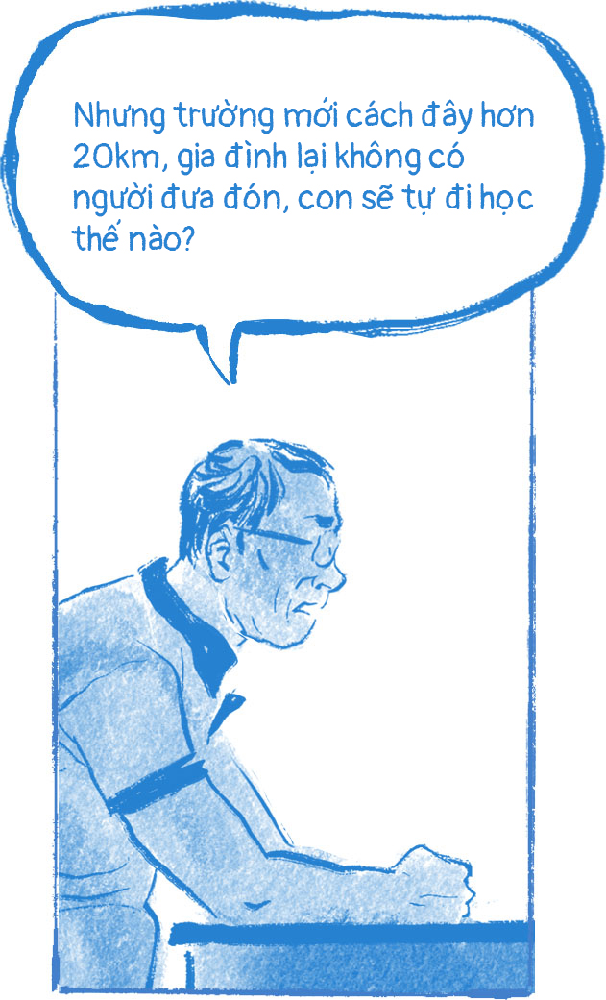
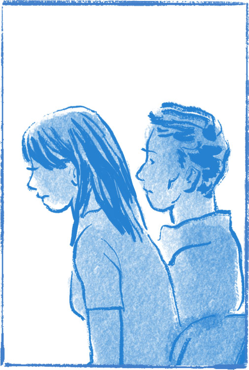
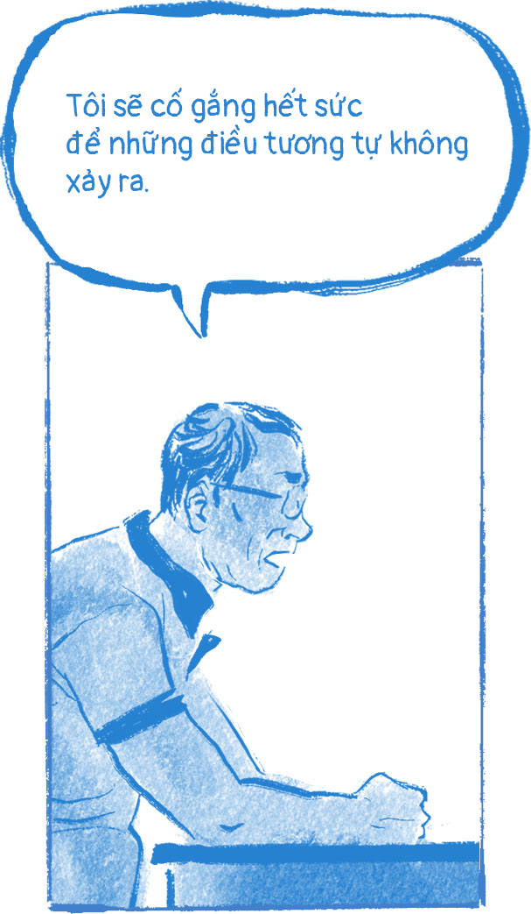
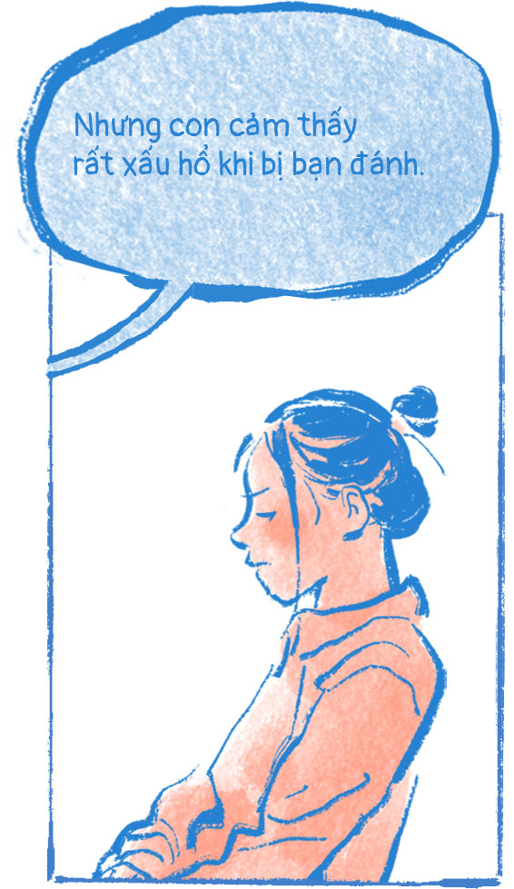
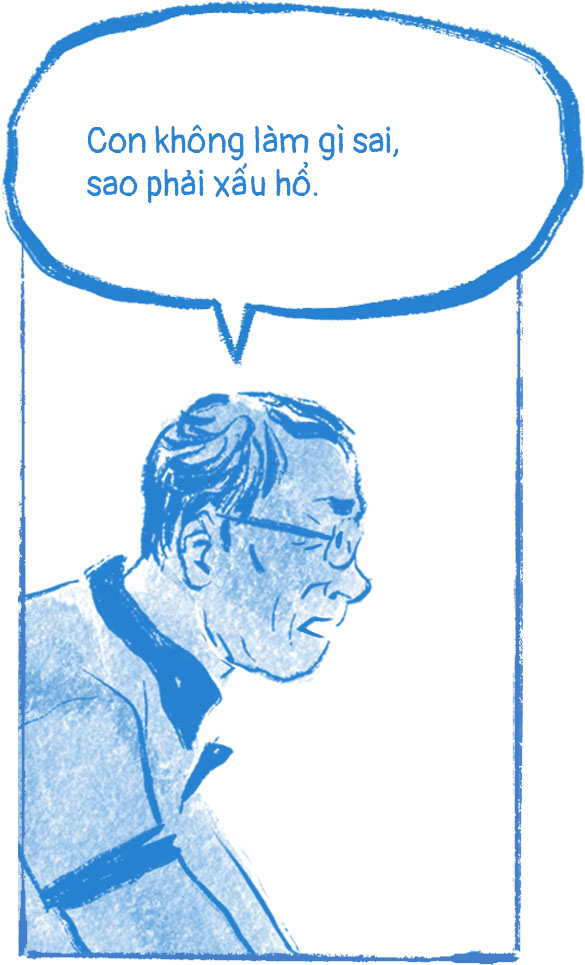
Tôi đã nói chuyện và làm công tác tâm lý với những bạn đã bắt nạt con. Thầy cô sẽ làm cầu nối để mối quan hệ của các con tốt hơn,
cũng như giúp con thoải mái, vui vẻ khi đến trường. Gia đình nên suy nghĩ về việc để con ở lại đây học tập, ngay gần nhà sẽ đỡ vất vả hơn rất nhiều.
Từ kẻ bị bắt nạt
Từ kẻ bị bắt nạt, A trở thành người đi bắt nạt.
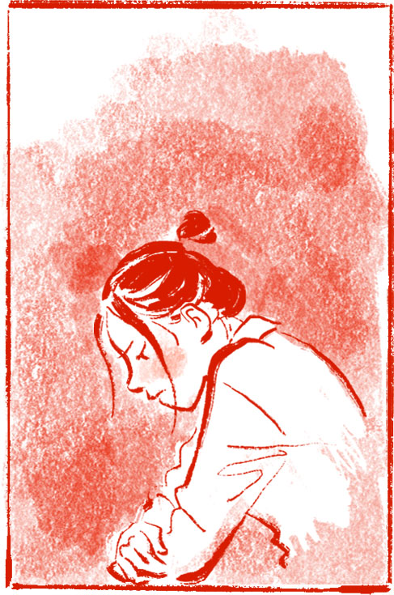
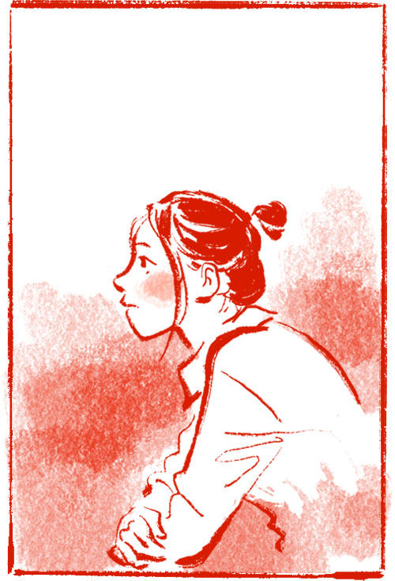
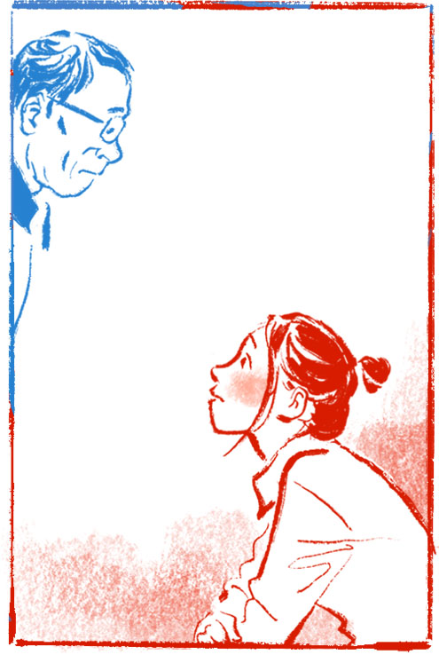
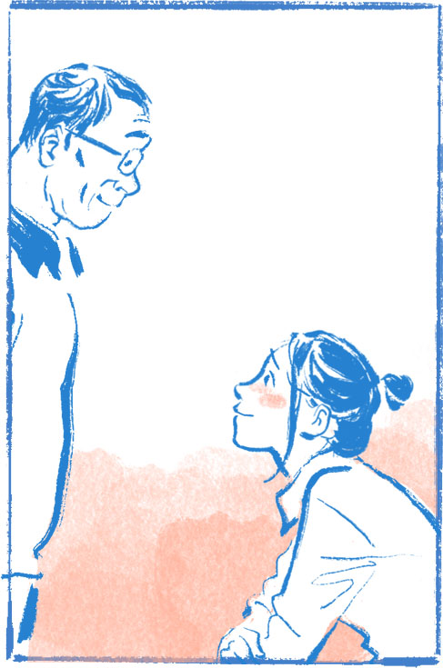
Thầy Tuấn Anh cho biết, A ở thời điểm này trầm tính hơn, có vẻ chín chắn hơn. A sẵn sàng chia sẻ và nhìn nhận lại sự việc mình đã gây ra.
“Khi làm việc với gia đình, tôi khuyên bố mẹ hãy về nói chuyện với con bằng tất cả tình yêu thương, chia sẻ như một người bạn, tránh việc đánh đập, sỉ nhục… vì làm như vậy sẽ gây thêm tổn thương. Bố mẹ cần coi đây như một sự cố đáng thương thay vì sự cố đáng trách.
Trong hội đồng kỷ luật của nhà trường, thầy cô giáo cũng cần lưu ý để quan tâm và dành nhiều yêu thương hơn”, thầy Tuấn Anh nói.
Bố mẹ cần coi đây như một sự cố đáng thương thay vì sự cố đáng trách.
Từ kẻ bị bắt nạt. A trở thành người đi bắt nạt. Với A, em có sự quan tâm của bố mẹ, sự động viên của thầy cô. Đây là điểm tựa để A phấn đấu tốt hơn, trưởng thành hơn sau những sai lầm của mình.